Looking For Bierocks???
You've come to the right place! Since 1977, The Berrock Shop has been making delicious, made from scratch bierocks by hand each day...just like you would at home if you had the time.
But, what's up with the spelling???
It's true, The Berrock Shop is spelled differently. Back in 1989, when we purchased the restaurant from two elderly ladies with an awesome recipe for bierocks, we asked them the same question. In fact, at the time there were a couple of other bierock places in town, with the third spelling, "beerock." You see, back then, "beerock" though incorrect, was actually the most widely accepted spelling for this beloved Russian-German favorite.
The ladies who originally started The Berrock Shop decided to spell their restaurant, "berrock" because they felt it was more phonetically correct...closer to the actual pronunciation. In addition, they wanted to distinguish themselves from their competition.
Through the years...
Through the years, the public has become more educated about bierocks, and now the correct spelling is more prevalent than ever. But when we took over The Berrock Shop, we didn't dare change what the two ladies had begun back in 1977...and as we discovered after almost thirty years, as long as you make great bierocks, people don't care how you spell them...and the rest, as they say...is history.